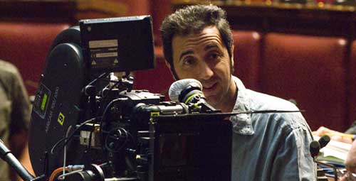

Directed by Paolo Sorrentino; Italy; 2008; 110 minutes

Pittsburgh Premiere
Awards
* 2008 Cannes Film Festival- Jury Prize for Paolo Sorrentino
* 2008 Cannes Film Festival- Golden Palm Nomination for Paolo Sorrentino
* 2008 European Film Award for best actor Toni Servillo
* 2008 European Film Award nomination for best film , best director, best cinematographer and best screenwriter
A journalist sits in front of the seven-time Italian Prime Minister Guilio Andreotti, and with alarming confidence, he accuses, “It’s one or the other. You’re either the most cunning criminal in the country because you never get caught, or you’re the most persecuted man in the history of Italy.” Director Paolo Sorrentino’s portrait of Giulio Andreotti (a brilliant Toni Servillo) may not leave you with the answer to that question, so complex is his character study of this sly, shrewd, and impenetrable Christian Democrat whose only claim to satisfaction was his cultural status and power. He is powerful, unshaken by terrorist attacks, scandals and the flash of photographers’ inquiries as to how multiple mafia turncoats could have produced the same account of his corruption. Sorrentino eludes biopic boredom with a toying of time, music, graphics and visuals in a way that even the eye of Andreotti had to take note. Paolo Sorrentino, said of Andreotti's reaction: “He was angry, and this is huge, because he’s known for his imperturbability to criticism. He let loose and said what he thought, which confirms the power of cinema, that it doesn’t only deal with representing facts but is also emotional.”
Moderated by Tony Buba, Internationally acclaimed film director from Braddock, Pittsburgh

Paolo Sorrentino
Born on May 31, 1970 in Naples, Italy, Sorrentino’s entry into film came with the release of his first screenplay, Polvere di Napoli, in 1998. He began directing several short movies, like L'amore non ha confini (1998) and La notte lunga (2001). The Association of Italian Film Critics awarded his debut feature One Man Up (L'uomo in più) the Nastro D'Argento (Silver Award) for Best Young Director. Sorrentino’s stylish thriller, The Consequences of Love (Le conseguenze dell'amore ,2004) explored the mindset of a lonely businessman being used as a Mafia pawn. The film’s nomination for the Palme D'Or at the Cannes Film Festival projected Sorrentino onto the international film scene. He followed his feature’s success with The Family Friend (L'amico di famiglia), telling the story of a malicious, aged, loan-shark who develops a fixation for the beautiful daughter a customer. Sorrentino’s made his acting debut with a cameo appearance in Nanni Moretti's film The Caiman (Il caimano). The recent success of Il Divo at Cannes has critics claiming that Italian cinema is making its comeback, and Sorrentino is setting the standards high.